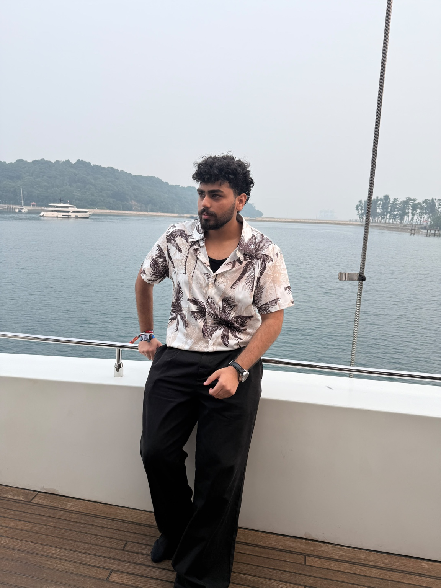
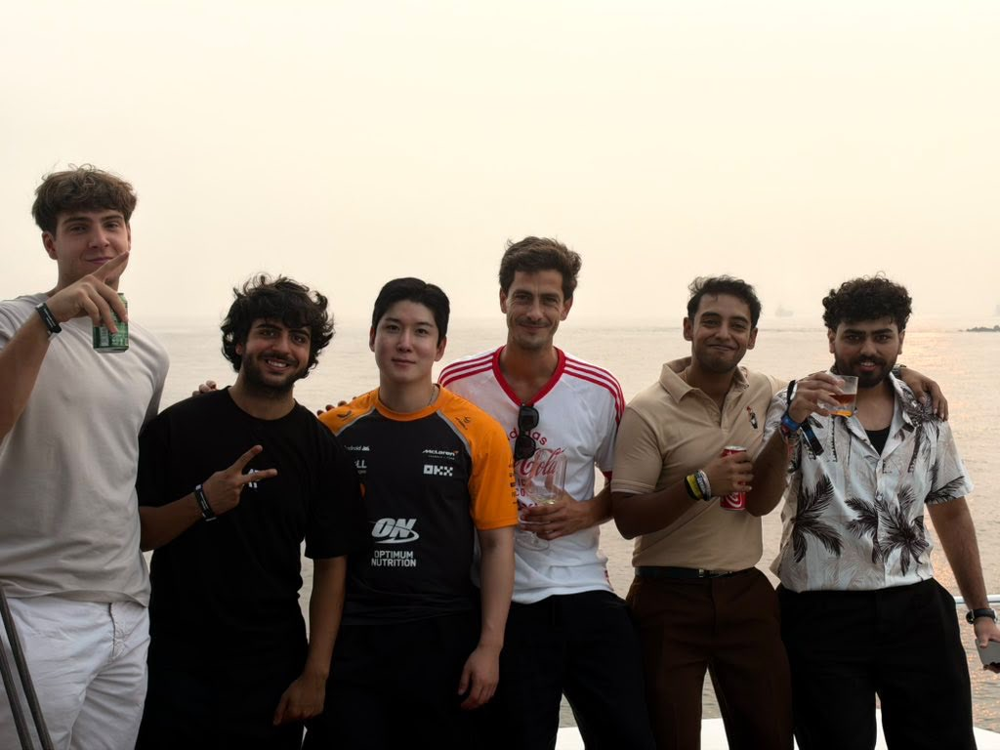
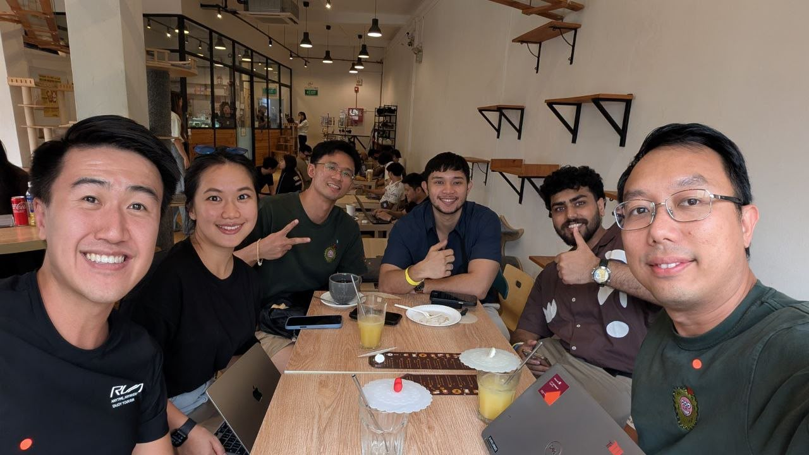
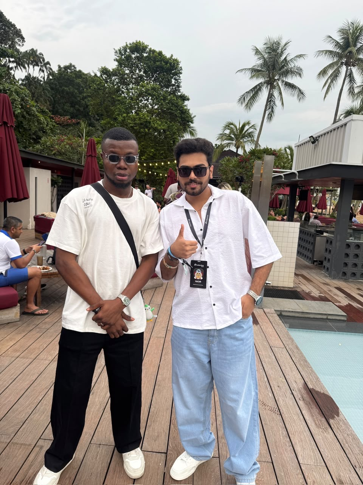
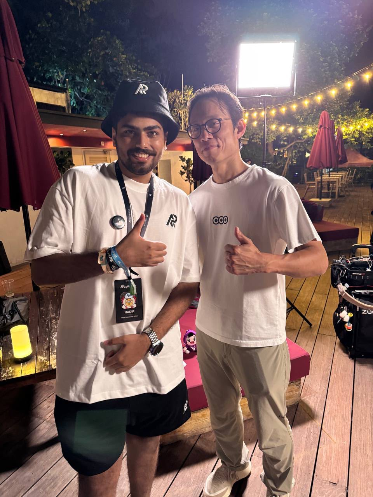
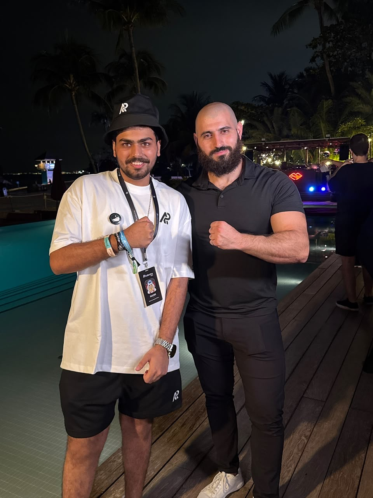
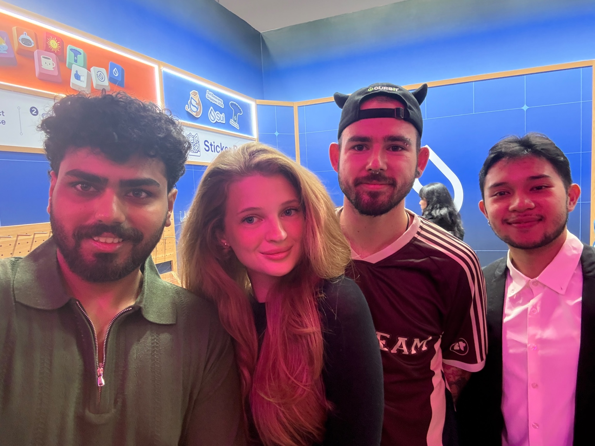

EXPERIENCE
Hi, I’m Nadir.
I build and grow communities in Web3.
20K+COMMUNITY
100+CLIENTS
1M+IMPRESSIONS
6TEAM MEMBERS

THE REAL NADIR
Community is a people business.
I’m Nadir, a Web3 community and growth operator who turns online audiences into active ecosystems. I’ve grown communities from zero to 20K+, supported more than 100 clients, led a six-person team and helped creator campaigns generate over 1M impressions. My work brings together community strategy, partnerships, customer experience and creator growth.
COMMUNITY GROWTHPARTNERSHIPSCREATOR ACTIVATIONCUSTOMER EXPERIENCE
PEOPLE
Meet my team & circle.
The builders, creators and partners I’ve met while growing communities across Web3.





